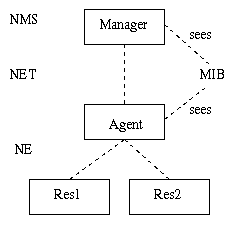
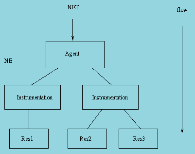
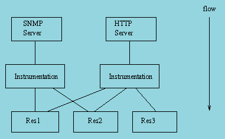
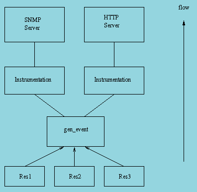

1 Introduction
The operation and maintenance support in OTP consists of a generic model for management subsystems in OTP, and some components to be used in these subsystems. This document describes the model.
The main idea in the model is that it is management protocol independent. Thus, it is not tied to any specific management protocol. An API is defined which can be used to write adaptations for specific management protocols.
Each OAM component in OTP is implemented as one sub application, which can be included in a management application for the system. Note that such a complete management application is not in the scope of this generic functionality. Examples illustrating how such an application can be built are included however.
1.1 Terminology
The protocol independent architectural model on the network level is the well-known Manager-Agent model. This model is based on the client-server principle, where the manager (client) sends requeststo the agent (server), the agent sends repliesback to the manager. There are two main differences to the normal client-server model. First, there are usually a few managers that communicate with many agents; and second, the agent may spontaneously send notificationsto the manager. The picture below illustrates the idea.
Figure 1.1: Terminology
The manager is often referred to as the NMS, to emphasize that it usually is realized as a program that presents data to an operator.
The agent is an entity that executes within a NE. In OTP, the network element may be a distributed system, meaning that the distributed system is managed as one entity. Of course, the agent may be configured to be able to run on one of several nodes, making it a distributed OTP application.
The management information is defined in an MIB. It is a formal definition of which information the agent makes available to the manager. The manager accesses the MIB through a management protocol, such as SNMP, CMIP, HTTP or CORBA. Each of these protocols have their own MIB definition language. In SNMP, it is a subset of ASN.1, in CMIP it is GDMO, in HTTP it is implicit, and using CORBA, it is IDL. Usually, the entities defined in the MIB are called MO, although these objects do not have to be objects in the OO way,for example, a simple scalar variable defined in an MIB is called a Managed Object. The Managed Objects are logical objects, not necessarily with a one-to-one mapping to the resources.
1.2 Model
In this section, the generic protocol independent model for use within an OTP based network element is presented. This model is used by all operation and maintenance components, and may be used by the applications. The advantage of the model is that it clearly separates the resources from the management protocol. The resources do not need to be aware of which management protocol is used to manage the system. This makes it possible to manage the same resources with different protocols.
The different entities involved in this model are the agentwhich terminates the management protocol, and the resourceswhich is to be managed, i.e. the actual application entities. The resources should in general have no knowledge of the management protocol used, and the agent should have no knowledge of the managed resources. This implies that some sort of translation mechanism must be used, to translate the management operations to operations on the resources. This translation mechanism is usually called instrumentation, and the function that implements it is called instrumentation function. The instrumentation functions are written for each combination of management protocol and resource to be managed. For example, if an application is to be managed by SNMP and HTTP, two sets of instrumentation functions are defined; one that maps SNMP requests to the resources, and one that e.g. generates an HTML page for some resources.
When a manager makes a request to the agent, we have the following picture:
Figure 1.2: Request to an agent by a manager
Note that the mapping between instrumentation function and resource is not necessarily 1-1. It is also possible to write one instrumentation function for each resource, and use that function from different protocols.
The agent receives a request and maps this request to calls to one or several instrumentation functions. The instrumentation functions perform operations on the resources to implement the semantics associated with the managed object.
For example, a system that is managed with SNMP and HTTP may be structured in the following way:
Figure 1.3: Structure of a system managed with SNMP and HTTP
The resources may send notifications to the manager as well. Examples of notifications are events and alarms. There is a need for the resource to generate protocol independent notifications. The following picture illustrates how this is achieved:
Figure 1.4: Notification handling
The main idea is that the resource sends the notfications as Erlang terms to a dedicated gen_event process. Into this process, handlers for the different management protocols are installed. When an event is received by this process, it is forwarded to each installed handler. The handlers are responsible for translating the event into a notification to be sent over the management protocol. For example, a handler for SNMP would translate each event into an SNMP trap.
1.3 SNMP based OAM
For all OAM components, SNMP adaptations are provided. Other adaptations may be defined in the future.
The OAM components, and some other OTP applications, define SNMP MIBs. All these MIBs are written in SNMPv2 SMI syntax, as defined in RFC1902. For convenience we also deliver the SNMPv1 SMI equivalent. All MIBs are designed to be v1/v2 compatible, i.e. the v2 MIBs do not use any construct not available in v1.
MIB structure
The top-level OTP MIB is called OTP-REG, and it is included in the sasl application. All other OTP mibs import some objects from this MIB.
Each MIB is contained in one application. The MIB text files are stored under mibs/<MIB>.mib in the application directory. The generated .hrl files with constant declarations are stored under include/<MIB>.hrl, and the compiled MIBs are stored under priv/mibs/<MIB>.bin. For example, the OTP-MIB is included in the sasl application:
sasl-1.3/mibs/OTP-MIB.mib
include/OTP-MIB.hrl
priv/mibs/OTP-MIB.binAn application that needs to IMPORT this mib into another MIB, should use the il option to the snmp mib compiler:
snmp:c("MY-MIB", [{il, ["sasl/priv/mibs"]}]).If the application needs to include the generated .hrl file, it should use the -include_lib directive to the Erlang compiler.
-module(my_mib).
-include_lib("sasl/include/OTP-MIB.hrl").The following MIBs are defined in the OTP system:
- OTP-REG (sasl)
-
This MIB contains the top-level OTP registration objects, used by all other MIBs.
- OTP-TC (sasl)
-
This MIB contains the general Textual Conventions, which can be used by any other MIB.
- OTP-MIB (sasl)
-
This MIB contains objects for instrumentation of the Erlang nodes, the Erlang machines and the applications in the system.
- OTP-OS-MON-MIB (os_mon)
-
This MIB contains objects for instrumentation of disk, memory and cpu usage of the nodes in the system.
- OTP-SNMPEA-MIB (snmp)
-
This MIB contains objects for instrumentation and control of the extensible snmp agent itself. Note that the agent also implements the standard SNMPv2-MIB (or v1 part of MIB-II, if SNMPv1 is used).
- OTP-EVA-MIB (eva)
-
This MIB contains objects for instrumentation and control of the events and alarms in the system.
- OTP-LOG-MIB (eva)
-
This MIB contains objects for instrumentation and control of the logs and FTP transfer of logs.
- OTP-EVA-LOG-MIB (eva)
-
This MIB contains objects for instrumentation and control of the events and alarm logs in the system.
- OTP-SNMPEA-LOG-MIB (eva)
-
This MIB contains objects for instrumentation and control of the snmp audit trail log in the system.
The different applications use different strategies for loading the MIBs into the agent. Some MIB implementations are code-only, while others need a server. One way, used by the code-only mib implementations, is for the user to call a function such as otp_mib:init(Agent) to load the MIB, and otp_mib:stop(Agent) to unload the MIB. See the application manual page for each application for a description of how to load each MIB.